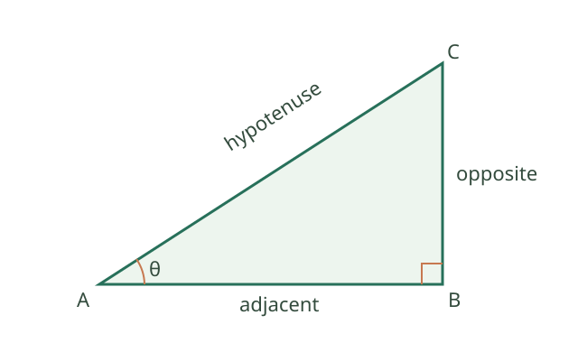
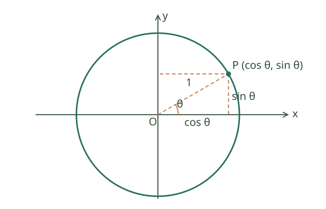
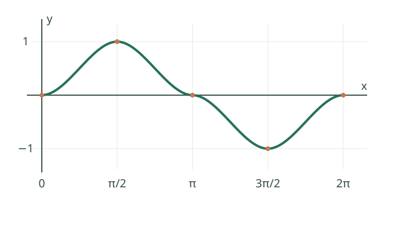

高中：三角函数
从测量高度认识三角函数
想求一棵不能直接爬上去的树的高度，可以在地面测出到树的水平距离，再测量视线与地面的夹角。树高、距离和视线构成直角三角形；三角函数用角度与边长的比例把它们联系起来。古代的土地测量和天文观测也推动了这类方法的发展。
直角三角形中的名词
在直角三角形中，面对直角的最长边叫斜边。针对选定的锐角 \(\theta\)，不接触这个角的直角边叫对边；接触这个角且不是斜边的直角边叫邻边。换一个锐角观察，对边和邻边会交换，斜边不变。

图中 \(A=\theta\)，\(BC\) 是对边，\(AB\) 是邻边，\(AC\) 是斜边。三个三角比定义为 \[ \sin\theta=\frac{\text{对边}}{\text{斜边}},\qquad \cos\theta=\frac{\text{邻边}}{\text{斜边}},\qquad \tan\theta=\frac{\text{对边}}{\text{邻边}}. \] 例如三条边依次为 \(BC=3,AB=4,AC=5\)，则 \(\sin\theta=3/5\)、\(\cos\theta=4/5\)、\(\tan\theta=3/4\)。两个直角三角形只要有同一个锐角，就相似，对应边成比例；因此这三个比只由角的大小决定，与三角形的放大或缩小无关。数学思想： 相似与比例，把长度问题转化为角度关系。
实际测量中，水平距离为 20 米、仰角为 \(30^\circ\)，高度差为 \(20\tan30^\circ=20/\sqrt3\) 米；要得到目标离地高度，还要加上观测点离地高度，且这里假定地面水平。
角度制、弧度制和任意角
角度制把一周分成 \(360^\circ\)；弧度用圆弧长除以半径定义角的大小。半圆的弧长为 \(\pi r\)，除以半径得到 \(\pi\) 弧度，因此 \(180^\circ=\pi\) 弧度、\(90^\circ=\pi/2\) 弧度。度数转换为弧度时乘 \(\pi/180\)，例如 \(30^\circ=\pi/6\)。
把角看成射线从始边转到终边的旋转量：逆时针为正角，顺时针为负角；超过一周仍可表示，例如 \(450^\circ\) 与 \(90^\circ\) 的终边相同。终边相同的角相差 \(360^\circ\) 的整数倍，即 \(2k\pi\)（\(k\) 为整数）。角度数值不同不意味着终边一定不同。
单位圆：将三角函数推广到任意角
单位圆是以原点为圆心、半径为 1 的圆。让角 \(\theta\) 从 x 轴正方向开始旋转，终边与单位圆交于点 \(P\)。定义 \(P\) 的横坐标为 \(\cos\theta\)，纵坐标为 \(\sin\theta\)，即 \(P=(\cos\theta,\sin\theta)\)。当 \(\cos\theta\ne0\) 时，\(\tan\theta=\sin\theta/\cos\theta\)。

图中点在第一象限，水平和竖直方向的投影分别是 \(\cos\theta\)、\(\sin\theta\)。半径为 1，根据勾股定理 \(\cos^2\theta+\sin^2\theta=1\)。这个定义保留锐角三角比，又能表示钝角、负角和多圈旋转；正弦、余弦的正负随点所在象限改变。正切在 \(\cos\theta=0\) 时无定义，不能把它当作无限大这个函数值。
函数图像、周期和振幅
将旋转角 \(x\) 作为横坐标、单位圆上对应点的纵坐标 \(\sin x\) 作为纵坐标，就得到正弦曲线。旋转一周后回到同一个点，因此数值每隔 \(2\pi\) 重复；这个最小的正重复长度叫最小正周期。

从左到右的关键点为 \((0,0)\)、\((\pi/2,1)\)、\((\pi,0)\)、\((3\pi/2,-1)\)、\((2\pi,0)\)。正弦和余弦的值都在 \([-1,1]\)；例如 \(y=2\sin x+1\) 绕中线 \(y=1\) 上下变化，最大值 3、最小值 −1，振幅是中线到峰值的距离 2。周期运动和交流电压等问题可用这类曲线近似，但模型是否适合应由实际数据检验。
6.1 定义、弧度与图像
- 180°=π 弧度；微积分中通常使用弧度。
- 单位圆上对应点坐标为 (cos x,sin x)；tan x=sin x/cos x，要求 cos x≠0。
- sin、cos 定义域为实数，值域 [−1,1]，最小正周期 2π。
- tan 的最小正周期为 π，定义域排除 x=π/2+kπ（k 为整数）。
- y=A sin(ωx+φ)+b（A、ω≠0）：振幅 |A|，周期 2π/|ω|，中线 y=b。
6.2 核心恒等式
- sin²x+cos²x=1；1+tan²x=1/cos²x（cos x≠0）。
- sin(α±β)=sinα cosβ±cosα sinβ。
- cos(α±β)=cosα cosβ∓sinα sinβ。
- sin2x=2sin x cos x。
- cos2x=cos²x−sin²x=2cos²x−1=1−2sin²x。
- sin²x=(1−cos2x)/2；cos²x=(1+cos2x)/2。
- sin(−x)=−sin x；cos(−x)=cos x。
6.2.1 和差、倍角公式与证明思路
单位向量 \(u=(\cos\alpha,\sin\alpha)\)、\(v=(\cos\beta,\sin\beta)\)。用坐标计算内积为 \(\cos\alpha\cos\beta+\sin\alpha\sin\beta\)；用几何内积计算为 \(\cos(\alpha-\beta)\)。所以
\[ \cos(\alpha-\beta)=\cos\alpha\cos\beta+\sin\alpha\sin\beta. \]
证明使用的思想： 数形结合、同一量的两种表示。这里把几何内积公式作为已知结论；若它由和差公式建立，就不能用此证明，避免循环论证。
利用 \(\cos(-\beta)=\cos\beta\)、\(\sin(-\beta)=-\sin\beta\)，可推得 \(\cos(\alpha+\beta)\) 公式；再用 \(\sin t=\cos(\pi/2-t)\) 推出
\[ \sin(\alpha+\beta)=\sin\alpha\cos\beta+\cos\alpha\sin\beta. \]
令 \(\alpha=\beta=x\)，得到 \(\sin2x=2\sin x\cos x\)，\(\cos2x=\cos^2x-\sin^2x\)。使用的思想： 特殊化、等价变形。
6.3 解三角形
- 正弦定理：a/sin A=b/sin B=c/sin C=2R，其中 R 为外接圆半径。
- 余弦定理：c²=a²+b²−2ab cos C。
- 面积：S=ab sin C/2，C 是边 a、b 的夹角。
易错点： 三角函数方程要写出周期产生的全部解，再根据区间筛选；不能随意约去可能为零的 sin x 或 cos x。
三角函数图像变换和应用建模
对 \(y=A\sin(\omega x+\varphi)+b\;(A\ne0,\omega\ne0)\)，振幅为 \(|A|\)，周期为 \(T=2\pi/|\omega|\)，相位平移为 \(-\varphi/\omega\)，中线为 \(y=b\)。变换由令 \(u=\omega x+\varphi\) 得到：先看正弦输入怎样缩放和平移，再看输出怎样伸缩和平移。该形式可拟合潮汐、日照、交流电压等周期现象；参数应对应振幅、周期、相位和平均水平。
正弦定理 \(a/\sin A=2R\) 的几何来源是外接圆中弦长 \(a=2R\sin A\)。余弦定理 \(c^2=a^2+b^2-2ab\cos C\) 可把一边投影到另一边后用勾股定理推出；当 \(C=90^\circ\) 时退化为勾股定理。测距时若不能直接抵达目标，可测一条基线及两个角，再用正弦定理求未知距离。这一思想连接了古代测量、海伦公式与三角测量。
匀速圆周运动。 设质点沿半径为 \(R>0\) 的圆以恒定角速度 \(\omega\) 运动，时刻 \(t\) 的角位置为 \(\theta=\omega t+\varphi\)，其中角用弧度计。若圆心的竖直坐标为 \(b\)，质点的竖直坐标是 \(y=b+R\sin(\omega t+\varphi)\)。当 \(\omega\ne0\) 时重复一周需要 \(T=2\pi/|\omega|\)；\(\omega=0\) 时质点不转动，不能用该式给出有限转动周期。
任意角、诱导公式和正切
逆时针转角为正、顺时针为负，终边相同的角相差 \(2k\pi\)。弧度等于弧长除以半径，故 \(s=r\theta\)、扇形面积 \(S=r^2\theta/2\)，其中 \(\theta\ge0\) 使用弧度。单位圆上点的坐标为 \((\cos\theta,\sin\theta)\)，由对称可得 \(\sin(\pi-\theta)=\sin\theta\)、\(\cos(\pi-\theta)=-\cos\theta\)。这是数形结合；先判断终边所在象限，再判断正负。
\(\tan\theta=\sin\theta/\cos\theta\)，在 \(\theta=\pi/2+k\pi\) 无定义；其周期是 \(\pi\)，在每个连续区间 \((-\pi/2+k\pi,\pi/2+k\pi)\) 上递增。由正弦、余弦和差公式相除，可得 \(\tan(\alpha+\beta)=(\tan\alpha+\tan\beta)/(1-\tan\alpha\tan\beta)\)，前提是涉及的正切与分母均有定义。振动模型可用角度或弧度表示，但代入时必须保持单位一致；不带转换系数的标准三角函数求导公式采用弧度。
正切函数是奇函数，值域为 \(\mathbb R\)，\(\tan x=0\) 当且仅当 \(x=k\pi\)，其图像经过 \((0,0)\)、\((\pi/4,1)\) 和 \((-\pi/4,-1)\)，在 \(x=\pi/2+k\pi\) 处有竖直渐近线，\(k\in\mathbb Z\)。对应的差角公式是 \(\tan(\alpha-\beta)=(\tan\alpha-\tan\beta)/(1+\tan\alpha\tan\beta)\)，同样要求所涉及的正切有定义且右侧分母非零。
例如 \(\sin(7\pi/6)=-1/2\)、\(\cos(7\pi/6)=-\sqrt3/2\)，因为该角位于第三象限，参考角为 \(\pi/6\)，正弦和余弦都为负；于是 \(\tan(7\pi/6)=\sqrt3/3\)。另一方面，\(\tan(\pi/4+\pi/6)=(1+1/\sqrt3)/(1-1/\sqrt3)=2+\sqrt3\)，这里两个正切及公式分母均有定义。
常见诱导关系还包括 \(\sin(\pi+\theta)=-\sin\theta\)、\(\cos(\pi+\theta)=-\cos\theta\)、\(\sin(\pi/2-\theta)=\cos\theta\)、\(\cos(\pi/2-\theta)=\sin\theta\)。它们可分别由单位圆上的中心对称和坐标交换得到；涉及正切时还需检查原式和变换后的分母非零，而不只是判断符号。
恒等变换的例子：\(\sqrt3\sin x+\cos x=2\sin(x+\pi/6)\)，因为展开右边得到 \(2[\sin x(\sqrt3/2)+\cos x(1/2)]\)。因此该式在全体实数上的最大值为 2、最小值为 −2；如果限定 \(x\) 的范围，还需检查对应相位能否取到峰值。
周期、相位与三角方程
\(y=2\sin(2x-\pi/3)+1\) 的振幅是 2，中线是 \(y=1\)，周期为 \(2\pi/2=\pi\)。因为 \(2x-\pi/3=2(x-\pi/6)\)，可从 \(y=2\sin(2x)\) 看作向右平移 \(\pi/6\)，再向上平移 1；括号内的系数必须先提出来。
解 \(\sin x=1/2\)：在一个完整周期内有 \(x=\pi/6\) 和 \(x=5\pi/6\)，全部实数解为 \(x=\pi/6+2k\pi\) 或 \(x=5\pi/6+2k\pi\)，其中 \(k\in\mathbb Z\)。若题目限定区间，再筛选这些解；不能只写一个锐角。
画 \(y=2\sin(2x-\pi/3)+1\) 的一个周期时，可令相位依次为 \(0,\pi/2,\pi,3\pi/2,2\pi\)，解出对应的横坐标，再代入得到纵坐标 \(1,3,1,-1,1\)。中线为 1、最大值为 3、最小值为 −1，五点按横坐标顺序描绘出一个周期；不要把相位 \(2x-\pi/3\) 的五个取值误当作横坐标。
弧度与单位圆
弧度定义为圆心角所对弧长除以半径，因此半圆对应 \(\pi\) 弧度、整圆对应 \(2\pi\) 弧度，\(60^\circ=\pi/3\)。半径为 3、圆心角为 \(\pi/3\) 的扇形，其弧长是 \(3\cdot\pi/3=\pi\)，面积是 \(3^2(\pi/3)/2=3\pi/2\)。这些弧长与面积公式中的角必须使用弧度且表示非负圆心角。
单位圆上角 \(\theta\) 的终边对应点为 \((\cos\theta,\sin\theta)\)。由 \(x^2+y^2=1\) 得 \(\sin^2\theta+\cos^2\theta=1\)。例如 \(\theta=5\pi/6\) 位于第二象限，对应参考角 \(\pi/6\)，所以 \(\sin\theta=1/2\)、\(\cos\theta=-\sqrt3/2\)。象限决定符号，参考角用于确定绝对值。
正弦、余弦函数的图像与性质
令 \(k\in\mathbb Z\)。正弦函数是奇函数，余弦函数是偶函数，两者定义域都是 \(\mathbb R\)、值域都是 \([-1,1]\)，最小正周期均为 \(2\pi\)。正弦函数在 \([-\pi/2+2k\pi,\pi/2+2k\pi]\) 上递增，在 \([\pi/2+2k\pi,3\pi/2+2k\pi]\) 上递减；余弦函数在 \([-\pi+2k\pi,2k\pi]\) 上递增，在 \([2k\pi,\pi+2k\pi]\) 上递减。各区间分别成立，不可把分离的区间直接合并。
\(\sin x=0\) 当且仅当 \(x=k\pi\)，最大值 1 出现在 \(x=\pi/2+2k\pi\)，最小值 −1 出现在 \(x=-\pi/2+2k\pi\)；\(\cos x=0\) 当且仅当 \(x=\pi/2+k\pi\)，最大值 1 出现在 \(x=2k\pi\)，最小值 −1 出现在 \(x=\pi+2k\pi\)。在 \([0,2\pi]\) 内画正弦曲线，可依次描点 \((0,0),(\pi/2,1),(\pi,0),(3\pi/2,-1),(2\pi,0)\)，再按周期延续。余弦曲线可用 \(\cos x=\sin(x+\pi/2)\) 从正弦曲线平移得到。
正弦定理中的两解现象
在 \(\triangle ABC\) 中，按约定边 \(a,b,c\) 分别对角 \(A,B,C\)。若已知 \(A=30^\circ\)、\(a=2\)、\(b=3\)，正弦定理给出 \(\sin B=b\sin A/a=3/4\)。角 \(B\) 可能是 \(\arcsin(3/4)\)，也可能是 \(180^\circ-\arcsin(3/4)\)；两者与 \(A\) 之和均小于 180°，所以这里有两个可能三角形。确定角后 \(C=180^\circ-A-B\)，再用正弦定理求 \(c\)。若候选角与已知角之和不小于 180°，该候选必须舍去。